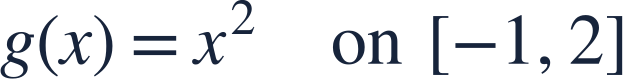

Absolute extrema
절대극값
![f(x)=x^(3)−3xon [−2,2]](../../assets/math/31be1e68f3102acff4.svg)
Absolute extrema require comparing actual function values at every candidate.
절대극값은 모든 후보점의 실제 함숫값을 비교해서 구합니다.
Absolute extrema require comparing actual function values at every candidate.
절대극값은 모든 후보점의 실제 함숫값을 비교해서 구합니다.
Reuse the endpoints and critical numbers found in lesson 30.
30강에서 찾은 끝점과 임계수를 다시 사용하세요.
| x | f(x) |
|---|---|
| −2 | −2 |
| −1 | 2 |
| 1 | −2 |
| 2 | 2 |
The largest and smallest table entries determine the absolute extrema, including ties.
표의 가장 큰 값과 작은 값이 절대극값이며 같은 값이 여러 번 나올 수 있습니다.
Evaluate candidates in the original function, not in f′.
도함수가 아니라 원래 함수에 후보를 대입합니다.
Include both endpoints and all interior critical numbers.
양 끝점과 모든 내부 임계수를 포함합니다.
State both the extreme value and every location where it occurs.
극값과 그 값이 나오는 모든 위치를 함께 쓰세요.
A local maximum may fail to be the absolute maximum on the full interval.
국소최댓값이 구간 전체의 절대최댓값인 것은 아닙니다.

Find both absolute extrema and their locations.
절대최댓값과 절대최솟값 및 위치를 구하세요.